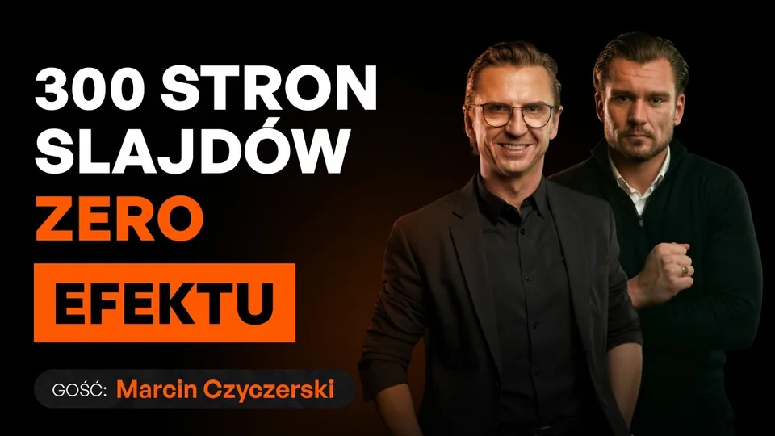
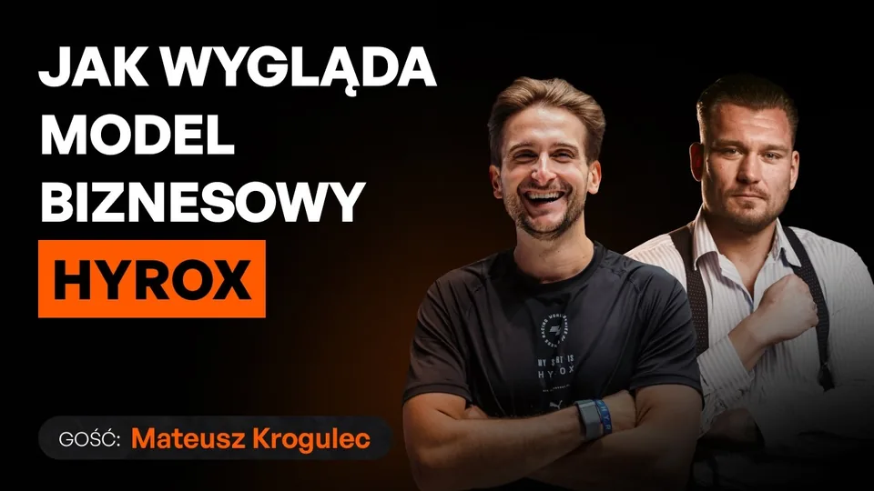
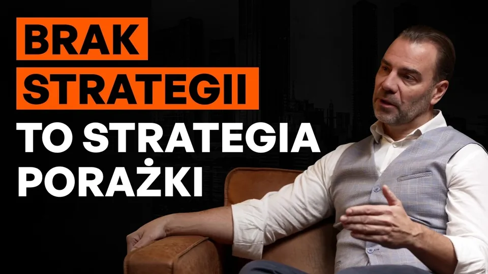

RealizacjeWarszawa
Zaczynamy od własnego kanału, bo to jedyny materiał, który możemy pokazać bez pytania nikogo o zgodę. Poniżej odcinki podcastu GSA, który nagrywamy i wydajemy sami. Realizacje klientów dokładamy tu po każdej publikacji, za zgodą.
Umów rozmowęOdcinki wideopodcastów, krótkie formy pionowe i materiały szkoleniowe. Przy każdej realizacji podajemy format, liczbę kamer i to, co dokładnie było po naszej stronie.
Realizacje klientów dokładamy po każdej publikacji i wyłącznie za zgodą. Przy części projektów nie pokazujemy nic, bo tak wynika z umowy. Jeśli chcesz zobaczyć konkretny format albo branżę, napisz - pokażemy materiał, którego nie ma jeszcze publicznie.
Sprawdziliśmy strony studiów w Warszawie: na większości nie da się obejrzeć ani jednego odcinka, który z nich wyszedł. Deklaracja o jakości nic nie znaczy, dopóki nie widać efektu.
Własny kanałPodcast GSA
Ponad 70 odcinków rozmów z ludźmi, którzy budują firmy w Polsce. Kliknij dowolny i oceń sam.

Strategia firmy to nie 300 slajdów
Marcin CzyczerskiPodcast GSA
Jak OSHEE wygrało z Powerade i Gatorade
Aleksander WośPodcast GSA

HYROX: model biznesowy fenomenu
Mateusz KrogulecPodcast GSA
Omnichannel w beauty
Agnieszka Bernaś-OleszczukPodcast GSA
Jak zrobić 100 mln sprzedaży w B2B
Krzysztof PawlakPodcast GSA

200 mln w 3 lata: strategia biznesowa
Konrad KwiatkowskiPodcast GSA
Pytania
01
Nie. Fragment w portfolio pokazujemy wyłącznie za zgodą, a przy części projektów nie pokazujemy nic, bo tak wynika z umowy.
02
Napisz, w czym działasz. Pokażemy materiał najbliższy Twojemu formatowi, także taki, którego nie ma publicznie.
Pokażemy studio, ustawimy Cię przed kamerą i nagramy próbne 5 minut.
Umów rozmowę